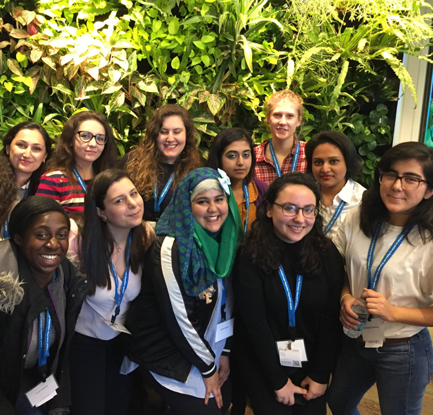
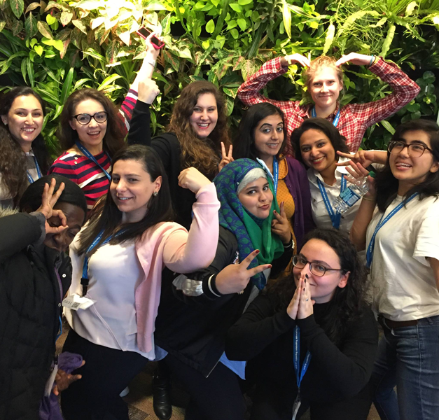
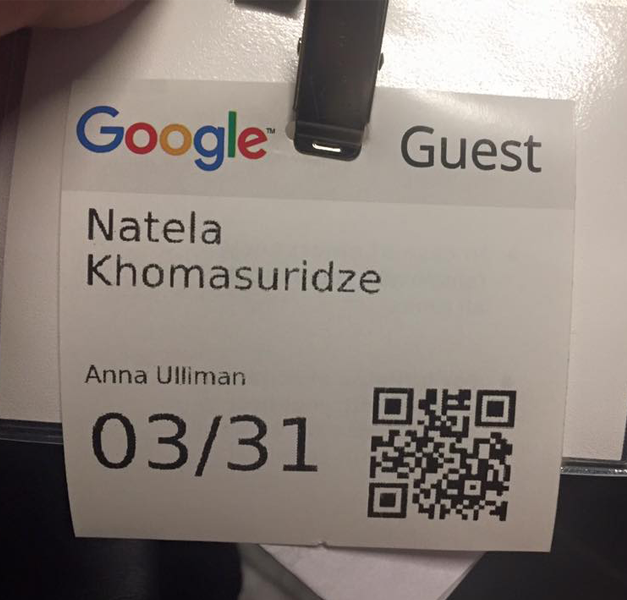
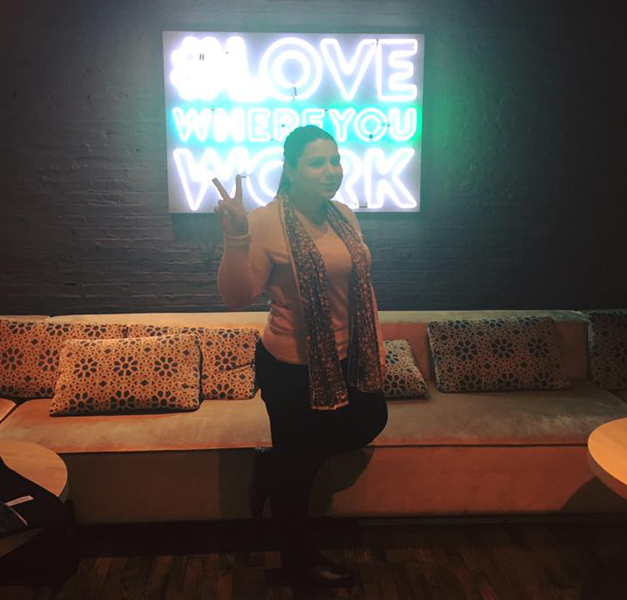
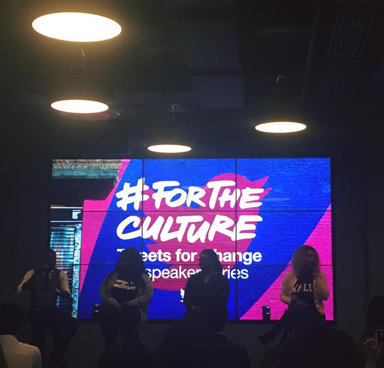
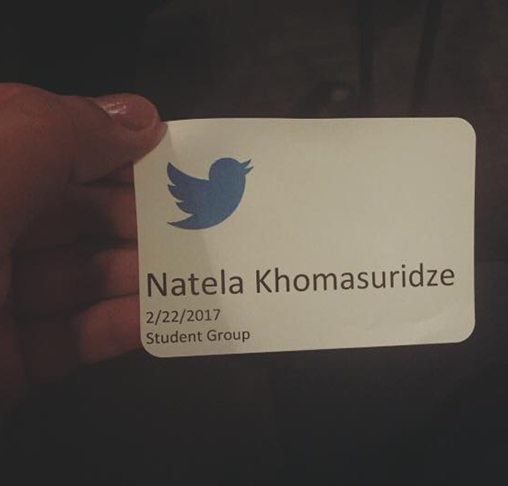
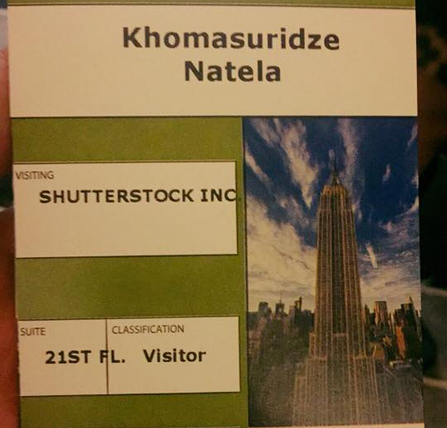
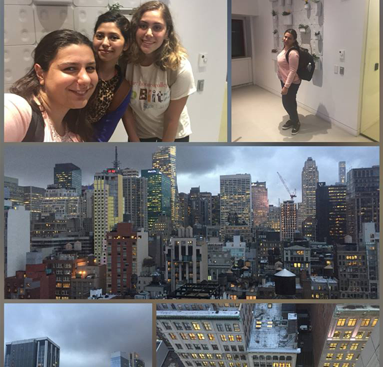
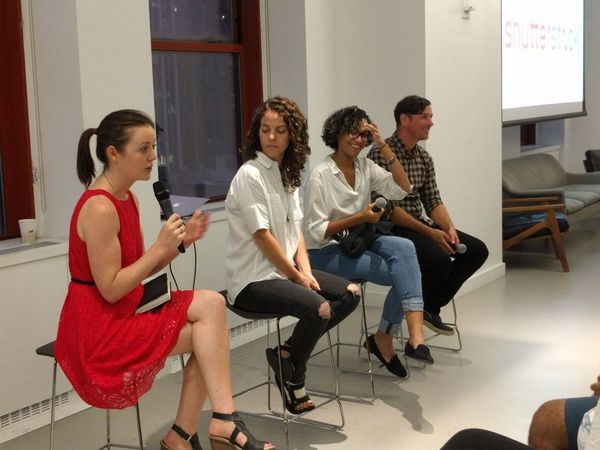
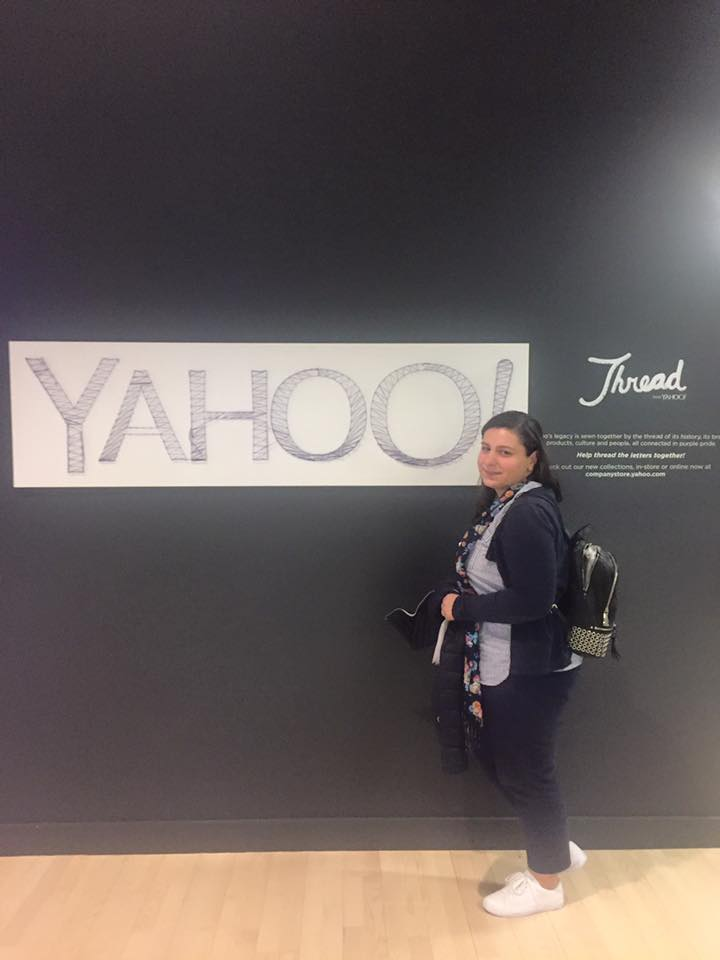

Association for Computer Machinary (ACM-W) Annual Celebration in Google, NYC.
ACM-W supports, celebrates, and advocates internationally for the full engagement of women in all aspects of the computing field, providing a wide range of programs and services to ACM members and working in the larger community to advance the contributions of technical women. ACM-W is an active organization with over 36,000 members. The mission of ACM-W is to encourage and enable a significant increase in the participation of women in fields related to technology in the world market. I attanded second annual ACM-W event at Google with Women in Computer Science in Brooklyn College (WICS) team, heard amazing discussions and attanded workshops about testing tools for code.



WOMEN IN COMPUTER SCIENCE IN BROOKLYN COLLEGE (WICS) at Twitter, NYC. #FORTHECULTURE



Shutterstock Campus Visit in Empire StateBuilding, NYC.
Visited Shutterstock’s amazing office space inside the Empire State Building and heard from members of their engineering, product and design team about what it's like to work inside Shutterstock, how they've built this popular technology company, powering a global creative marketplace.



Attended HackFemme Confere at Yahoo this Spring!
C4Q presents HackFemme, a conference that equips future tech leaders with the skills and knowledge they need to support womens success in the tech industry. Got a C4Q pin and heard amazing discussions of panelists about being a champion!
